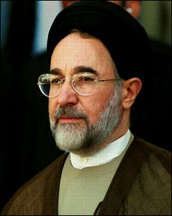

رییس جمهور سابق کشورمان گفت: به حکم وظیفه سنگینی که نسبت به کشور و سرنوشت ملت شریف دارم رای خود را به حسن روحانی خواهد داد.
به گزارش ایلنا به نقل از فارس، مهر و ایسنا، سید محمد خاتمی رییس جمهوری سابق کشورمان با صدور پیامی ضمن ستودن احساس مسؤولیت محمد رضا عارف کاندیدای یازدهمین دوره انتخابات ریاست جمهوری اعلام کرد که رأی خود را به حسن روحانی خواهد داد.
در پیام خاتمی از محمدرضا عارف دیگر کاندیدای یازدهمین دوره انتخابات ریاست جمهوری تشکر شده و آمده است: دکتر محمدرضا عارف، دانشمندی با باور استوار و بینش روشن که خلوص و شایستگی و توانمندی خود را در همه دوران خدمت و حضور پربرکتش در عرصه های علمی، سیاسی و مدیریتی نشان داده است، بی هیچ چشم داشت، به عنوان و مقام، در اثر احساس مسؤولیت در برابر خداوند و مردمی که خود را وامدار آنان می داند در ساحت انتخابات حضور مبارک یافت و صمیمانه از پایگاه بلند اصلاح طلبی به ترسیم موقعیت حساس کشور و بیان دردها و نیازهای مردم پرداخت و راه حل های عالمانه و مسؤولانه برای گشودن گرهها و خدمت به انقلاب و میهن ارائه داده تا بیش از پیش شایستگی خود را نشان دهد و اصلاح طلبی را در دوران فشارها و تنگناها به خوبی نمایندگی کند. و بالمال نیز با ترجیح مصالح کلی بر منافع شخصی و تلاش برای جلوگیری از تشتت آراء و تفرقه و پراکندگی نیروها ظرفیت ممتاز خود را نشان داد.
خاتمی در این پیات تاکید کرده است: اینک در حالی که دیگر فرزند توانمند ملت جناب آقای دکتر حسن روحانی که اهل خیر و خدمت و اندیشه و تدبیر در صحنه است و مواضع استوار خود را که در مسیر خیر و نیاز و مطالبه مردم شریف است به خوبی اعلام کرده است، علاقمندان به کشور و سرنوشت آن و خواستاران تحول مثبت در عرصه حیات سیاسی، فرهنگی، اقتصادی و بین المللی می توانند به انتخابی دست بزنند که به یاری خداوند جامعه را به سوی آینده بهتر رهنمون شود.
وی در این پیام گفته که به حکم وظیفه سنگینی که نسبت به کشور و سرنوشت ملت شریف دارم رای خود را به حسن روحانی خواهد داد و همچنین از اصلاحطلبان خواسته است که روحانی را فرصتی مناسب برای رسیدن به خواست ها و مطالبات خود بدانند.
پایان پیام